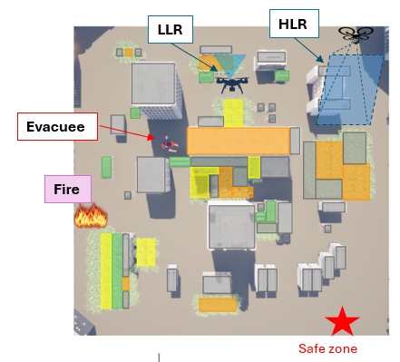

|
Addison Kalanther
I am a researcher in Berkeley Artificial Intelligence Research at UC Berkeley, advised by Professor Shankar Sastry. I work on reinforcement learning methods for multi-agent games. I graduated with my bachelor's degree in EECS from UC Berkeley in Winter 2024. I previously worked as a software engineer, interning at Salesforce, Lucid Software, and BeamNG.
|
{kind=link}
ResearchI am generally interested in robot learning for non-cooperative environments. My current research is in multi-agent reinforcement learning with game-theoretic structure. |
|

|
Coordinated Autonomous Drones for Human-Centered Fire Evacuation in Partially Observable Urban Environments
M. Mendoza, A. Kalanther, D. Bostwick, E. Stephan, C. Maheshwari, S. Sastry IEEE Global Humanitarian Technology Conference (GHTC), 2025 project page / arXiv Autonomous drones coordinate to locate and guide evacuees to safety during fires in urban environments with limited visibility. |

|
Evader-Agnostic Team-Based Pursuit Strategies in Partially-Observable Environments
A. Kalanther, D. Bostwick, C. Maheshwari, S. Sastry Workshop on Multi-Agent Systems, Robotics: Science and Systems (RSS), 2025 project page / arXiv A team of UAVs learns to pursue an unknown evader in urban environments with limited visibility using multi-agent reinforcement learning. |
|
Design and source code from Jon Barron's website. |